<title>Campsite Screensaver Stage 1</title>
<meta name="claude:viewport-fit-sides" content="cover">
<link rel="preconnect" href="https://fonts.googleapis.com">
<link rel="preconnect" href="https://fonts.gstatic.com" crossorigin>
<link rel="stylesheet" href="https://fonts.googleapis.com/css2?family=Big+Shoulders+Display:wght@600;800&family=Atkinson+Hyperlegible:ital,wght@0,400;0,700;1,400&family=JetBrains+Mono:wght@400;600&display=swap">
<style>
/* Layout: one reading column (~66ch) with figures breaking wider; colors taken from the screensaver's own palette (forest ridge, ember, stream, night sky). */
:root {
  --bg: #f1f4f1;
  --surface: #ffffff;
  --fg: #1d2827;
  --muted: #56645f;
  --rule: #d3dbd5;
  --accent: #b5532a;     /* campfire ember */
  --forest: #2c5a43;     /* ridge green */
  --stream: #2f7f8a;
  --done: #2c7a4b;
  --next: #b5532a;
  --later: #8a948f;
  --code-bg: #e6ebe7;
  --font-display: "Big Shoulders Display", "Arial Narrow", "Helvetica Neue", sans-serif;
  --font-body: "Atkinson Hyperlegible", "Segoe UI", system-ui, sans-serif;
  --font-mono: "JetBrains Mono", ui-monospace, "Cascadia Mono", Consolas, monospace;
  --col: 44rem;
  --wide: 66rem;
}
@media (prefers-color-scheme: dark) {
  :root:not([data-theme="light"]) {
    --bg: #111922; --surface: #17222d; --fg: #e4ebe7; --muted: #9caba6; --rule: #273541;
    --accent: #f0a05c; --forest: #86c1a0; --stream: #7fcbd4; --done: #6fca93; --next: #f0a05c;
    --later: #7d8a92; --code-bg: #1d2a36; color-scheme: dark;
  }
}
:root[data-theme="dark"] {
  --bg: #111922; --surface: #17222d; --fg: #e4ebe7; --muted: #9caba6; --rule: #273541;
  --accent: #f0a05c; --forest: #86c1a0; --stream: #7fcbd4; --done: #6fca93; --next: #f0a05c;
  --later: #7d8a92; --code-bg: #1d2a36; color-scheme: dark;
}

* { box-sizing: border-box; }
body {
  background: var(--bg); color: var(--fg);
  font-family: var(--font-body); font-size: 1.0625rem; line-height: 1.6;
  padding-left: max(16px, env(safe-area-inset-left, 0px));
  padding-right: max(16px, env(safe-area-inset-right, 0px));
  padding-block: 2.5rem 4rem;
}
main { display: grid; gap: 3.5rem; }
.col { width: 100%; max-width: var(--col); margin-inline: auto; min-width: 0; }
.wide { width: 100%; max-width: var(--wide); margin-inline: auto; min-width: 0; }
section { display: grid; gap: 1.1rem; }

h1, h2, h3 { font-family: var(--font-display); text-wrap: balance; line-height: 1.05; margin: 0; }
h1 { font-size: clamp(2.6rem, 7vw, 4.4rem); font-weight: 800; letter-spacing: 0.01em; text-transform: uppercase; }
h2 { font-size: clamp(1.8rem, 4vw, 2.4rem); font-weight: 800; text-transform: uppercase; letter-spacing: 0.02em; color: var(--forest); }
h3 { font-size: 1.35rem; font-weight: 600; text-transform: uppercase; letter-spacing: 0.04em; }
p { margin: 0; }
a { color: var(--stream); text-underline-offset: 2px; }
a:focus-visible, video:focus-visible, button:focus-visible { outline: 3px solid var(--accent); outline-offset: 2px; }
code, kbd { font-family: var(--font-mono); font-size: 0.86em; background: var(--code-bg); padding: 0.1em 0.35em; border-radius: 3px; overflow-wrap: anywhere; }
.eyebrow { font-family: var(--font-mono); font-size: 0.78rem; text-transform: uppercase; letter-spacing: 0.12em; color: var(--muted); }
.lede { font-size: 1.2rem; color: var(--fg); }
.muted { color: var(--muted); }
.small { font-size: 0.92rem; }

/* Hero */
header.hero { display: grid; gap: 1.25rem; }
.hero-title { display: grid; gap: 0.6rem; }
.hero-title h1 span { color: var(--accent); }
figure { margin: 0; display: grid; gap: 0.5rem; min-width: 0; }
figcaption { font-size: 0.9rem; color: var(--muted); }
.frame { border-radius: 6px; overflow: hidden; background: #0d141b; aspect-ratio: 5 / 3; max-width: 100%; }
.frame img, .frame video { display: block; width: 100%; height: 100%; object-fit: cover; }

/* Status board */
.board { display: grid; grid-template-columns: repeat(auto-fit, minmax(14rem, 1fr)); gap: 1px; background: var(--rule); border: 1px solid var(--rule); border-radius: 6px; overflow: hidden; }
.board > div { background: var(--surface); padding: 1rem 1.1rem; display: grid; gap: 0.25rem; align-content: start; }
.board .k { font-family: var(--font-mono); font-size: 0.74rem; text-transform: uppercase; letter-spacing: 0.1em; color: var(--muted); }
.board .v { font-family: var(--font-display); font-weight: 800; font-size: 1.6rem; line-height: 1.1; }
.board .d { font-size: 0.92rem; color: var(--muted); }
.pill { display: inline-block; font-family: var(--font-mono); font-size: 0.72rem; font-weight: 600; text-transform: uppercase; letter-spacing: 0.08em; padding: 0.15em 0.55em; border-radius: 999px; border: 1.5px solid currentColor; vertical-align: 0.15em; }
.pill.done { color: var(--done); } .pill.next { color: var(--next); } .pill.later { color: var(--later); }

/* Galleries */
.grid3 { display: grid; grid-template-columns: repeat(3, minmax(0, 1fr)); gap: 0.9rem; }
.grid2 { display: grid; grid-template-columns: repeat(2, minmax(0, 1fr)); gap: 1.2rem; }
@media (max-width: 720px) { .grid3 { grid-template-columns: repeat(2, minmax(0, 1fr)); } .grid2 { grid-template-columns: 1fr; } }
@media (max-width: 440px) { .grid3 { grid-template-columns: 1fr; } }
.grid3 figcaption b, .grid2 figcaption b { color: var(--fg); }

/* Strip diagram */
.strips { position: relative; }
.strips .overlay { position: absolute; inset: 0; pointer-events: none;
  background-image: repeating-linear-gradient(to bottom, transparent 0, transparent calc(100% / 15 - 1px), rgba(255,255,255,0.75) calc(100% / 15 - 1px), rgba(255,255,255,0.75) calc(100% / 15)); }
.strips .hot { position: absolute; left: 0; right: 0; background: rgba(240, 120, 60, 0.28); border-block: 1px solid rgba(255, 170, 110, 0.9); }

/* Architecture */
.arch { display: grid; grid-template-columns: 1fr auto 1fr; gap: 0.8rem; align-items: center; }
.arch .box { border: 1.5px solid var(--rule); background: var(--surface); border-radius: 6px; padding: 0.9rem 1rem; display: grid; gap: 0.3rem; min-width: 0; }
.arch .box.core { border-color: var(--forest); }
.arch .box.empty { border-style: dashed; }
.arch .hosts { display: grid; gap: 0.8rem; }
.arch .arrow { font-family: var(--font-mono); color: var(--muted); font-size: 1.4rem; }
.arch h3 { font-size: 1.15rem; }
@media (max-width: 640px) { .arch { grid-template-columns: 1fr; } .arch .arrow { transform: rotate(90deg); justify-self: center; } }

/* Tables */
.table-wrap { overflow-x: auto; border: 1px solid var(--rule); border-radius: 6px; background: var(--surface); }
table { border-collapse: collapse; width: 100%; font-size: 0.95rem; }
th, td { text-align: left; padding: 0.6rem 0.85rem; border-bottom: 1px solid var(--rule); vertical-align: top; }
tr:last-child td { border-bottom: none; }
th { font-family: var(--font-mono); font-size: 0.74rem; text-transform: uppercase; letter-spacing: 0.08em; color: var(--muted); font-weight: 600; background: var(--bg); }
td.ok { color: var(--done); font-weight: 700; white-space: nowrap; }

/* Lists */
ul.plain, ol.plain { margin: 0; padding-left: 1.2rem; display: grid; gap: 0.55rem; }
dl.defs { margin: 0; display: grid; gap: 1rem; }
dl.defs dt { font-weight: 700; }
dl.defs dd { margin: 0.2rem 0 0; color: var(--fg); }

/* Roadmap */
ol.road { list-style: none; margin: 0; padding: 0; display: grid; gap: 0; border-left: 2px solid var(--rule); }
ol.road li { position: relative; padding: 0.55rem 0 0.55rem 1.4rem; display: grid; grid-template-columns: 2.4rem 1fr; gap: 0.6rem; }
ol.road li::before { content: ""; position: absolute; left: -7px; top: 0.95rem; width: 12px; height: 12px; border-radius: 50%; background: var(--bg); border: 2px solid var(--later); }
ol.road li.done::before { background: var(--done); border-color: var(--done); }
ol.road li.next::before { background: var(--next); border-color: var(--next); }
ol.road .n { font-family: var(--font-display); font-weight: 800; font-size: 1.3rem; color: var(--muted); font-variant-numeric: tabular-nums; }
ol.road li.done .n { color: var(--done); } ol.road li.next .n { color: var(--next); }
ol.road .t b { display: block; }
ol.road .t span { color: var(--muted); font-size: 0.93rem; }

.callout { border-left: 4px solid var(--accent); background: var(--surface); padding: 1rem 1.2rem; border-radius: 0 6px 6px 0; display: grid; gap: 0.5rem; }
.scenes { counter-reset: s; display: grid; grid-template-columns: repeat(auto-fit, minmax(16rem, 1fr)); gap: 1rem; }
.scene { background: var(--surface); border: 1px solid var(--rule); border-radius: 6px; padding: 1rem 1.1rem; display: grid; gap: 0.35rem; align-content: start; }
.scene h3 { font-size: 1.15rem; color: var(--accent); }
footer { color: var(--muted); font-size: 0.88rem; }

@media (prefers-reduced-motion: reduce) { * { scroll-behavior: auto !important; } }
</style>

<main>

<header class="hero wide">
  <div class="hero-title col" style="max-width: var(--wide)">
    <div class="eyebrow">TComm · campsite screensaver · handoff for Mike · 30 Oct 2026</div>
    <h1>Stage 1 is done: <span>the landscape</span></h1>
    <p class="lede">The screensaver can now paint its whole Firewatch-style valley, in any time of day and weather, on a PC. Nothing has run on your panel yet. That is Stage 2, and it is yours to drive.</p>
  </div>
  <figure>
    <div class="frame">
      <video id="sweep" src="img/day_sweep.mp4" poster="img/sweep_poster.png" muted loop playsinline controls preload="metadata" aria-label="Twenty-second preview sweeping the scene from dawn through day, golden hour and dusk to night"></video>
    </div>
    <figcaption>A whole day in 20 seconds: one landscape swept from dawn to night. Rendered by the PC preview from the Stage 1 code, 800×480, the panel's exact resolution.</figcaption>
  </figure>
</header>

<section class="col" aria-labelledby="glance">
  <h2 id="glance">At a glance</h2>
  <div class="board">
    <div><span class="k">Stage 1 · foundation</span><span class="v">Done <span class="pill done">reviewed</span></span><span class="d">Landscape renders cleanly; dusk palette looks right.</span></div>
    <div><span class="k">Where the code is</span><span class="v"><code>screensaver</code> branch</span><span class="d">On GitHub at Bodgie-B/tcomm. Not merged into <code>main</code> yet.</span></div>
    <div><span class="k">Size</span><span class="v">33 files · ~5,000 lines</span><span class="d">8 commits, about a third of it tests.</span></div>
    <div><span class="k">Tests</span><span class="v">4 of 4 pass</span><span class="d">Re-run on a Mac today with the strict build flags.</span></div>
    <div><span class="k">On the panel</span><span class="v">Not yet <span class="pill next">stage 2</span></span><span class="d">Everything about the ESP32 is unverified until then.</span></div>
    <div><span class="k">Next step needs</span><span class="v">You + the board</span><span class="d">Your laptop, the USB cable, and about an evening to set up.</span></div>
  </div>
</section>

<section class="col" aria-labelledby="what">
  <h2 id="what">What the screensaver is</h2>
  <p>When a TComm panel sits idle, it will play a slow, wordless animated story: a valley builds itself, a hiker walks in, sets up camp and gets on with his evening while small animals watch. Mostly very little happens (wind in the grass, the stream moving, a bird going by), and every so often a bigger moment lands, like the bear going after the food bag. The full creative brief is <code>docs/screensaver/CAMPSITE_SCREENSAVER_BRIEF.md</code>.</p>
  <p>The plan has eleven stages. Stage 1 was the foundation: the drawing engine, the color system, the timing system, and a PC preview so scenes can be built and reviewed without flashing the board every time. The hiker and the animals come later; right now the scene is the empty valley with drifting clouds.</p>
</section>

<section class="wide" aria-labelledby="see">
  <div class="col" style="display:grid; gap:1.1rem; max-width: var(--col)">
    <h2 id="see">See it</h2>
    <p>Every image below is an untouched frame from the preview program. The panel will show the same pixels once Stage 2 is done, though colors will look a little different on the real screen and will need tuning by eye.</p>
    <h3>Six times of day</h3>
    <p class="muted small">The time of day is one dial that runs from night through dawn, morning, day, golden hour and dusk, then back to night. Colors slide smoothly between these points, so there is no hard switch at sunset. The sun sets and the moon rises behind the ridges.</p>
  </div>
  <div class="grid3">
    <figure><div class="frame">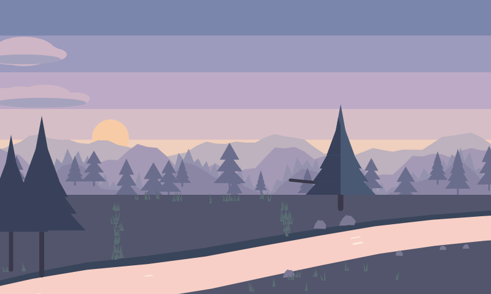</div><figcaption><b>Dawn.</b> Sun just above the ridge.</figcaption></figure>
    <figure><div class="frame">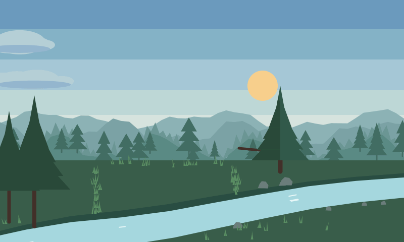</div><figcaption><b>Morning.</b> Cool greens.</figcaption></figure>
    <figure><div class="frame">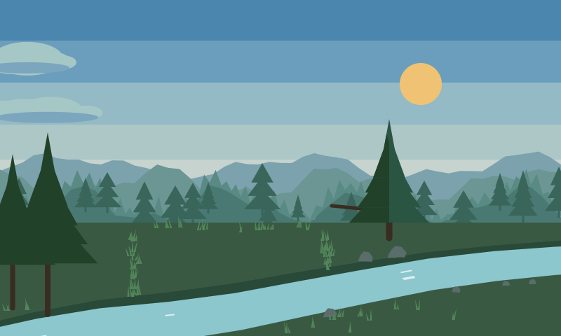</div><figcaption><b>Day.</b> Sun at its highest.</figcaption></figure>
    <figure><div class="frame">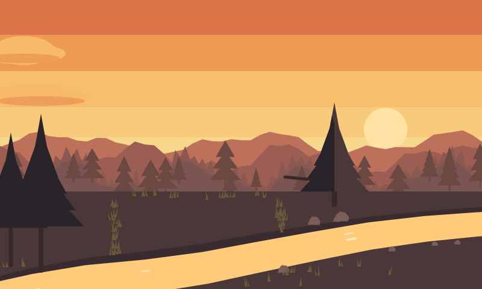</div><figcaption><b>Golden hour.</b> The classic Firewatch look.</figcaption></figure>
    <figure><div class="frame">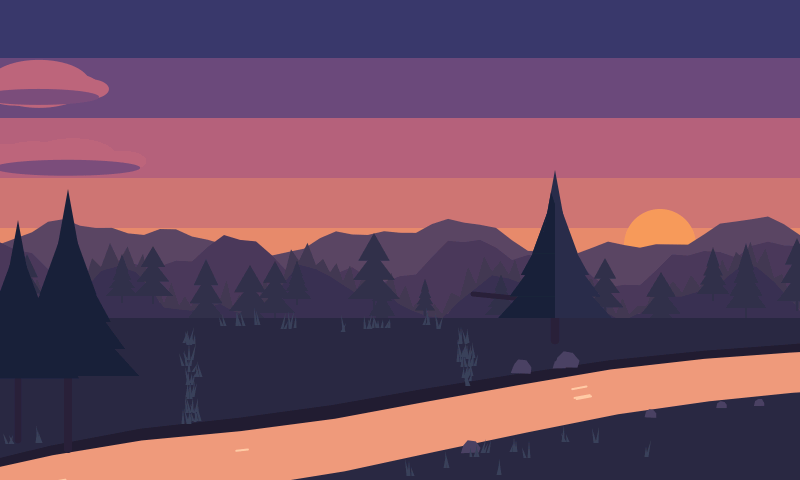</div><figcaption><b>Dusk.</b> Sun sinking behind the ridge.</figcaption></figure>
    <figure><div class="frame">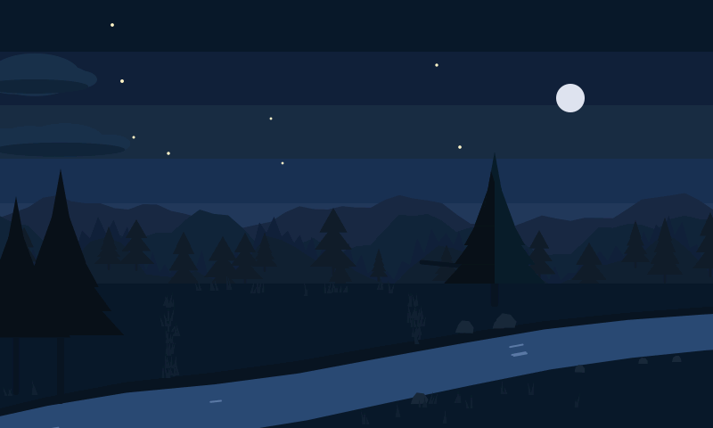</div><figcaption><b>Night.</b> Stars fade in, moon up.</figcaption></figure>
  </div>

  <div class="col" style="display:grid; gap:1.1rem; max-width: var(--col)">
    <h3>Weather and night mode</h3>
    <p class="muted small">Weather is laid over the time-of-day colors. Overcast greys the sky and dims the sun, fog washes out the far ridges first, and night mode dims everything for a dark hallway. Rain, snow and the rest arrive in Stage 9.</p>
  </div>
  <div class="grid3">
    <figure><div class="frame">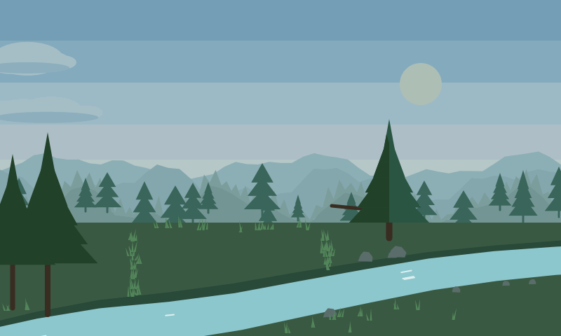</div><figcaption><b>Overcast</b> (80%), daytime.</figcaption></figure>
    <figure><div class="frame">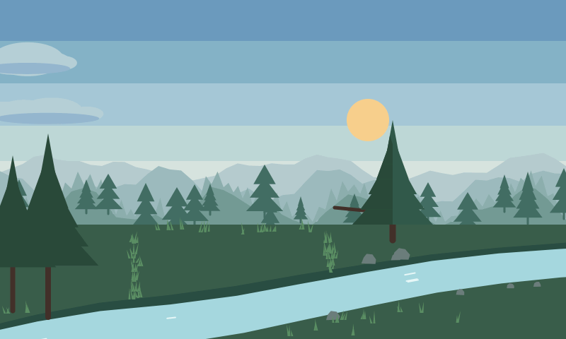</div><figcaption><b>Fog</b> (70%), morning.</figcaption></figure>
    <figure><div class="frame">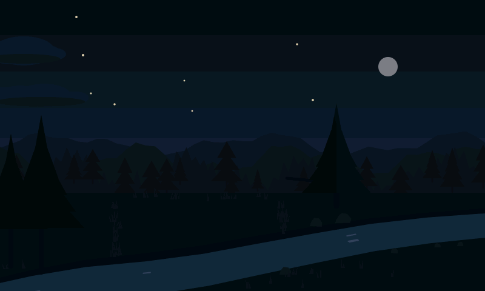</div><figcaption><b>Night mode</b>, fully dimmed.</figcaption></figure>
  </div>

  <div class="col" style="display:grid; gap:1.1rem; max-width: var(--col)">
    <h3>A new valley every loop</h3>
    <p class="muted small">Each loop (about ten minutes) starts from a random number, the "seed", which reshapes the ridges, tree lines, rocks and clouds. Same seed, same valley, so any moment can be replayed exactly. These three are seeds 3, 42 and 7, all at golden hour.</p>
  </div>
  <div class="grid3">
    <figure><div class="frame">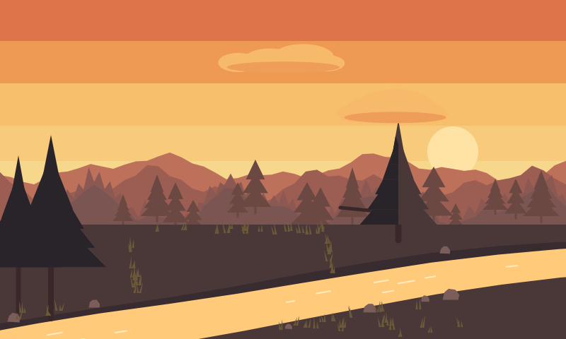</div><figcaption>Seed 3</figcaption></figure>
    <figure><div class="frame">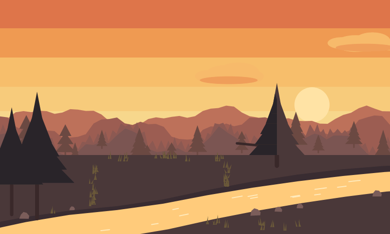</div><figcaption>Seed 42</figcaption></figure>
    <figure><div class="frame">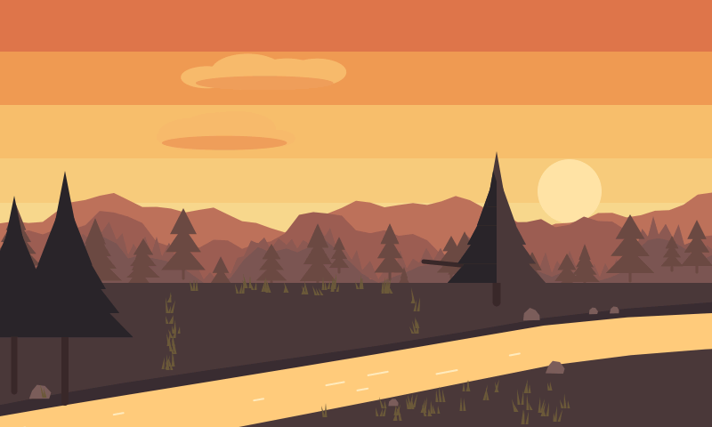</div><figcaption>Seed 7</figcaption></figure>
  </div>
</section>

<section class="col" aria-labelledby="built">
  <h2 id="built">What was built</h2>
  <p>The code is split so that the same scene runs on a PC and on the panel without changes. The middle part, called <b>core</b>, knows nothing about any particular screen: it just paints pixels into memory. Each "host" around it hands it a screen and a clock.</p>
  <div class="arch" role="img" aria-label="Diagram: core feeds two hosts, the PC preview (built) and the panel port (empty, Stage 2)">
    <div class="box core">
      <h3>core/</h3>
      <span class="small">Drawing engine, colors, timing, the scene. Plain C++, no hardware calls.</span>
      <span><span class="pill done">built</span></span>
    </div>
    <div class="arrow" aria-hidden="true">→</div>
    <div class="hosts">
      <div class="box">
        <h3>sim/ · PC preview</h3>
        <span class="small">Writes frames to image files, or opens a live window with keyboard controls.</span>
        <span><span class="pill done">built</span></span>
      </div>
      <div class="box empty">
        <h3>port_esp32/ · the panel</h3>
        <span class="small">Hands core the panel's screen memory and a 25-per-second tick.</span>
        <span><span class="pill next">stage 2 · empty</span></span>
      </div>
    </div>
  </div>
  <dl class="defs">
    <div><dt>Drawing engine</dt><dd>Fills shapes (polygons, circles, ellipses, rounded strokes) with smooth, anti-aliased edges, which is what keeps the ridges and trees crisp instead of jagged. The tests check its edges against exact geometry to within about 1%.</dd></div>
    <div><dt>Color system</dt><dd>32 named color slots (sky bands, three ridges, trees, ground, water, fire, smoke and so on) whose values slide along the time-of-day dial, with overcast, fog and night-dim laid on top. All the numbers live in one table in <code>core/palette.cpp</code>, so tuning on the real panel is a one-file job.</dd></div>
    <div><dt>Timing system</dt><dd>The scene runs in "beats" on a fixed 25-ticks-per-second clock, the way a storyboard runs in shots. Doorbell, status and dog events from TComm get queued and handled at the start of a tick, so a run can be replayed exactly.</dd></div>
    <div><dt>Landscape</dt><dd>Five sky bands, three ridges, a far tree line, a pine band, the meadow, the stream, the pine the food bag will hang from, and the campsite clearing (kept empty for the tent). The bottom-right corner is reserved for the TComm status chip, and a test makes sure no scenery ever lands there.</dd></div>
    <div><dt>PC preview</dt><dd><code>ss_preview</code> renders frames and a script turns them into a video; <code>ss_window</code> opens a live window where keys change the time of day, weather and seed, fast-forward, or ring a test doorbell.</dd></div>
  </dl>
</section>

<section class="col" aria-labelledby="light">
  <h2 id="light">How it stays light on the panel</h2>
  <p>The panel's screen memory is big (768 KB for one frame) and lives in slower memory that the display is reading from constantly. Redrawing the whole screen every frame would fight the display for that memory and could cause tearing. So the screen is cut into 15 horizontal strips of 32 rows. Each frame, only the strips where something moved get rebuilt, in a small fast buffer, and then copied out in one go.</p>
  <figure>
    <div class="frame strips">
      
      <div class="overlay" aria-hidden="true"></div>
      <div class="hot" aria-hidden="true" style="top: calc(100% / 15 * 2); height: calc(100% / 15 * 5);"></div>
    </div>
    <figcaption>The 15 strips. With only the two clouds moving, the tests measure 5 strips redrawn per frame (shaded band, approximate position), a third of the screen. The ground stays untouched until grass, the stream and the fire start moving in later stages.</figcaption>
  </figure>
  <p class="muted small">The brief suggested "dirty rectangles" around each moving thing. The Stage 1 build chose strips instead because grass, water and fire will soon touch most of the lower screen every frame, and strips keep the copy to the panel in long straight runs, which that memory likes best.</p>
</section>

<section class="col" aria-labelledby="checks">
  <h2 id="checks">Checks run</h2>
  <p>The Stage 1 code was reviewed in the cloud session that wrote it. Before writing this page I rebuilt it from GitHub on a Mac and ran everything again.</p>
  <div class="table-wrap">
    <table>
      <thead><tr><th>Check</th><th>What it shows</th><th>Result</th></tr></thead>
      <tbody>
        <tr><td>Strict build</td><td>Core compiles with every warning turned into an error, and without the C++ features the ESP32 build will disable.</td><td class="ok">Clean</td></tr>
        <tr><td><code>test_raster</code></td><td>Shape edges, coverage, clipping (including absurd inputs) and strips matching a full frame pixel for pixel.</td><td class="ok">47 / 47</td></tr>
        <tr><td><code>test_palette</code></td><td>Color slots and the time-of-day curves.</td><td class="ok">Pass</td></tr>
        <tr><td><code>test_anim</code></td><td>Easing, sine table accuracy, random picks, beat timing.</td><td class="ok">Pass</td></tr>
        <tr><td><code>test_scene</code></td><td>Clouds cost 5 strips a frame; a time-of-day jump rebuilds all 15; a loop rolls over at exactly 10 minutes; the status-chip corner stays clear.</td><td class="ok">Pass</td></tr>
        <tr><td>Live window</td><td><code>ss_window</code> had never been built against the real SDL2 library. It now compiles and ran for several seconds without crashing on macOS.</td><td class="ok">Runs</td></tr>
        <tr><td>Windows build</td><td>Not tried. The build settings use GCC/Clang options, so Visual Studio's compiler will not accept them; MSYS2 is the likely path.</td><td class="muted">Unverified</td></tr>
        <tr><td>On the panel</td><td>Speed, memory and colors on the ESP32-S3.</td><td class="muted">Stage 2</td></tr>
      </tbody>
    </table>
  </div>
  <div class="grid2">
    <figure><div class="frame" style="aspect-ratio: 5/3; background: var(--surface)">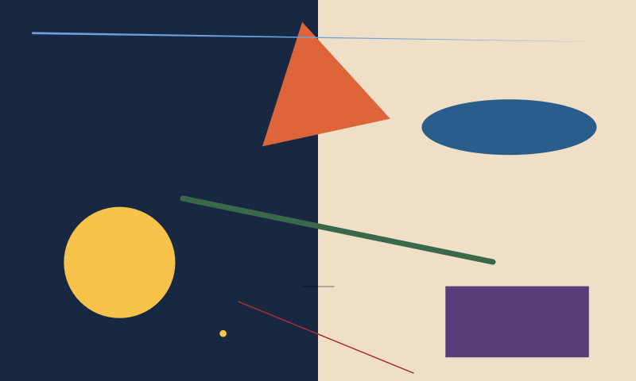</div><figcaption>The drawing engine's test sheet: smooth edges on both dark and light grounds, down to hairlines.</figcaption></figure>
    <figure><div class="frame" style="aspect-ratio: 800/168; background: var(--surface)">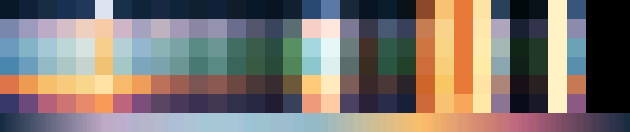</div><figcaption>All 32 color slots (columns) at each time of day (rows). The strip along the bottom is the sky sliding through a full day.</figcaption></figure>
  </div>
</section>

<section class="col" aria-labelledby="decided">
  <h2 id="decided">Decisions made along the way</h2>
  <p>These go beyond the brief. Each is written up in more detail in <code>docs/screensaver/SCREENSAVER_HANDOFF.md</code>.</p>
  <ul class="plain">
    <li><b>Strips, not rectangles</b>, for the reason above.</li>
    <li><b>Time of day is a dial, not six fixed palettes.</b> The panel firmware will turn the clock and sunrise/sunset into a dial position; the screensaver itself never reads the clock. Sunset, the Lookout scene and fog all use the same mechanism.</li>
    <li><b>Colors are only recalculated when the dial moves noticeably</b> (about every half hour of real time), because a recalculation redraws the whole background once.</li>
    <li><b>Everything is replayable.</b> A run is fully determined by its seed plus the events that came in, so a glitch seen once can be reproduced on the PC.</li>
    <li><b>The house's location stays out of the code.</b> No latitude or longitude is ever committed; it goes in an untracked local config file.</li>
  </ul>
</section>

<section class="wide" aria-labelledby="story">
  <div class="col" style="display:grid; gap:1.1rem; max-width: var(--col)">
    <h2 id="story">The story plan</h2>
    <p>The visual approach was agreed with you earlier: one fixed camera, flat stacked silhouettes, a hiker about 90 pixels tall with a brimmed hat and a tall pack, and animals built from a handful of shapes each with one unmistakable feature. Fire and tent light are flat warm pools of color, never a glow. Beyond the brief's idea pools, five original scenes are planned for Stages 5 to 7:</p>
  </div>
  <div class="scenes">
    <div class="scene"><h3>Shadow theater</h3><p class="small">His silhouette in the lit tent makes hand-shadow animals. Real animals gather to watch. He makes a bear, and the real bear's silhouette appears beside the tent. Everyone scatters but him.</p></div>
    <div class="scene"><h3>Ranger on the ridge</h3><p class="small">A tiny figure on the far ridge trades lantern blinks with the hiker. This doubles as the doorbell reaction: the lantern blinks, he waves toward the edge of the screen, the chip pulses.</p></div>
    <div class="scene"><h3>Echo</h3><p class="small">He shouts at the valley, the echo comes back, then a smaller one, then a tiny one from the squirrel on the stump.</p></div>
    <div class="scene"><h3>Rain shelter</h3><p class="small">Animals slide in under the tent awning one by one and he scoots over each time. The bear arrives. Everyone leaves except the frog.</p></div>
    <div class="scene"><h3>Firefly jar</h3><p class="small">He catches fireflies, and the pool of light shrinks and follows the jar. He looks for a long beat, opens the lid, and the light spreads back.</p></div>
  </div>
</section>

<section class="col" aria-labelledby="loose">
  <h2 id="loose">Loose ends from the Stage 1 review</h2>
  <p>None of these block Stage 2. Most are best fixed while working on the board.</p>
  <ol class="plain">
    <li>Build the background through the small fast buffer instead of straight into the big slow memory, and time it on the board.</li>
    <li>A one-line safety check on memory alignment at start-up.</li>
    <li>Color tuning on the real panel: at night the ridge steps may be too close to tell apart, the stream is the loudest thing in bright light, and some water and smoke colors are guesses.</li>
    <li>The moon pops in a little; a short fade would soften it.</li>
    <li>The preview's folder creation only understands <code>/</code>, so a Windows path like <code>C:\frames</code> may fail. Relative folder names work. This matters now that the work moves to Windows.</li>
    <li>Very large circles lose a little smoothness. Fine for the sun and moon at their current size.</li>
  </ol>
</section>

<section class="col" aria-labelledby="next">
  <h2 id="next">What's next</h2>
  <div class="callout">
    <h3>Stage 2: on the board</h3>
    <p>Get the same valley onto the panel with the clouds drifting. <b>Done when</b> the clouds move at a steady 20 or more frames per second with no tearing or picture shift, and the serial log shows frame time, memory use and flash use.</p>
    <p>What Claude will need from you along the way:</p>
    <ul class="plain">
      <li>The Waveshare example you flashed from, or permission to download Waveshare's examples for the 4.3C, so the screen setup is read from their code rather than guessed.</li>
      <li>A choice of tool: Arduino (what Waveshare's examples mostly use, and what the main TComm brief leans toward) or ESP-IDF. Claude can recommend one; it is a once-for-the-whole-project decision.</li>
      <li>The COM port, confirmed each time before it flashes. It has been COM5. Claude must never erase the flash without asking you.</li>
      <li>A short phone video of the panel at the end, so the colors can be judged on the real screen.</li>
    </ul>
  </div>
  <h3>The whole road</h3>
  <ol class="road">
    <li class="done"><span class="n">1</span><span class="t"><b>Foundation <span class="pill done">done</span></b><span>Drawing engine, colors, timing, PC preview, static landscape.</span></span></li>
    <li class="next"><span class="n">2</span><span class="t"><b>On the board <span class="pill next">next</span></b><span>Same landscape on the panel at 20+ fps, with logging.</span></span></li>
    <li><span class="n">3</span><span class="t"><b>Build-up and ambient life</b><span>Scene assembles itself; grass sway, stream flow, fire flicker. Runs an hour without a glitch.</span></span></li>
    <li><span class="n">4</span><span class="t"><b>The hiker</b><span>Walk cycle, breathing, poses. Reads clearly as a silhouette.</span></span></li>
    <li><span class="n">5</span><span class="t"><b>Story spine</b><span>Arrive, set up camp, evening, bed, one beat at a time.</span></span></li>
    <li><span class="n">6</span><span class="t"><b>Critters</b><span>Animals and the small-moment scheduler.</span></span></li>
    <li><span class="n">7</span><span class="t"><b>Surprises and variety</b><span>Ten loops in a row with no two alike.</span></span></li>
    <li><span class="n">8</span><span class="t"><b>Hooks into TComm</b><span>Status chip, doorbell reaction, touch to reveal the main screen in under half a second.</span></span></li>
    <li><span class="n">9</span><span class="t"><b>Night and weather</b><span>Reviewed in a dark room on the real panel.</span></span></li>
    <li><span class="n">10</span><span class="t"><b>Lookout scene</b><span>Plays only at real sunset.</span></span></li>
    <li><span class="n">11</span><span class="t"><b>Ambient sound</b><span>Optional, off by default.</span></span></li>
  </ol>
</section>

<section class="col" aria-labelledby="files">
  <h2 id="files">Where things are</h2>
  <div class="table-wrap">
    <table>
      <thead><tr><th>Path (on the <code>screensaver</code> branch)</th><th>What it is</th></tr></thead>
      <tbody>
        <tr><td><code>docs/screensaver/STAGE2_START_HERE.md</code></td><td>The briefing for your Claude Code: current state and the recommended path. Point Claude at this first.</td></tr>
        <tr><td><code>docs/screensaver/SCREENSAVER_HANDOFF.md</code></td><td>The detailed Stage 1 engineering notes.</td></tr>
        <tr><td><code>docs/screensaver/CAMPSITE_SCREENSAVER_BRIEF.md</code></td><td>The creative and engineering brief.</td></tr>
        <tr><td><code>docs/screensaver/stage1-report/</code></td><td>This page and its pictures.</td></tr>
        <tr><td><code>screensaver/core/</code></td><td>The screensaver itself.</td></tr>
        <tr><td><code>screensaver/sim/</code></td><td>The PC preview programs.</td></tr>
        <tr><td><code>screensaver/tests/</code></td><td>The four test programs.</td></tr>
        <tr><td><code>screensaver/port_esp32/</code></td><td>Empty. Stage 2 fills it.</td></tr>
      </tbody>
    </table>
  </div>
</section>

<footer class="col">
  Stage 1 built and reviewed in a Claude Code cloud session; report written 30 October 2026 from the code on GitHub at commit <code>28955b9</code>. Images and videos are real preview output, not mock-ups.
</footer>

</main>

<script>
(function () {
  var v = document.getElementById('sweep');
  if (!v) return;
  var reduce = window.matchMedia && window.matchMedia('(prefers-reduced-motion: reduce)').matches;
  if (!reduce) { var p = v.play(); if (p && p.catch) p.catch(function () {}); }
})();
</script>
